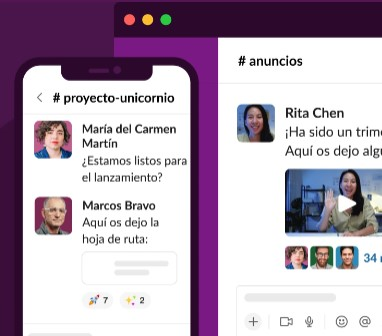

Un buen trabajo en equipo comienza con una sede digital
Reunir a todos tus compañeros, herramientas y comunicación en un mismo lugar te permitirá trabajar de manera más rápida y eficiente que nunca.


EMPRESAS DE TODO EL MUNDO YA CONFÍAN EN SLACK

Reúne a tu equipo
Los canales son el corazón de Slack. Son espacios organizados para todo el mundo que contienen todo lo necesario para trabajar. Los canales permiten conectarse entre departamentos. oficinas, zonas horarias e incluso con otras empresas.
Obtener más información sobre los canales
Selecciona cómo quieres trabajar
Slack te otorga la flexibilidad para trabajar cuando, donde y como tú quieras. Puedes chatear, enviar clips de audio y vídeo o unirte a una junta para discutir asuntos en directo.
Obtén más información acerca de la comunicación flexible